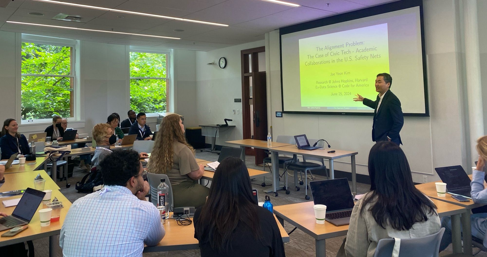

Jae Yeon Kim
I am an assistant research scientist at the SNF Agora Institute at Johns Hopkins University and a research fellow at the Center for Public Leadership at Harvard Kennedy School. Previously, I worked as a senior data scientist at Code for America, where I collaborated with all levels of the U.S. government to improve access to safety net programs. I completed my PhD in Political Science from the University of California, Berkeley in 2021. My research has been published in top outlets such as Nature Human Behaviour and received multiple awards from the American Political Science Association.
I study how the state and marginalized populations interact in American politics and policy, with a focus on policy implementation (state capacity) and community organizing and collective action (civic capacity). My research agenda bridges the social and behavioral sciences and data science and is grounded in people’s everyday experiences accessing public services and solving collective problems. I specialize in use-inspired research based on partnerships with government agencies. In addition, I have extensive experience building original, large-scale, and multi-purpose databases using big data and machine learning/AI. One example is the Mapping the Modern Agora project, which maps the U.S. civil society at scale utilizing more than 1.8 million IRS tax returns, 1.1 million websites, and other digital trace data of nonprofit organizations.
In addition to my substantive interests, through my work on computational social science and data science pedagogy, I am actively engaged in bridging social sciences and data science and making computational methods accessible.
I am currently working on a book version of my award-winning dissertation, tentatively titled “Negotiating Identity in the American Welfare State: The Organizational Origin of Multiracial America.”
I am on the job market in the 2024-2025 academic year.
You can reach me at jkim638@jhu.edu. Here is a link to my CV.
Travel & Talks (2024)
- October, American Politics and Public Policy Workshop, Yale University. Invited speaker (scheduling).
- September/October, Identity and Politics Workshop, UC Berkeley. Invited speaker (scheduling).
- September 3-7, American Political Science Association (APSA) annual meeting, Philadelphia (scheduled).
- August 28, Information Science Seminar, University of Colorado, Boulder. Invited speaker (scheduled).
- July 29, The 4th Annual Research Conference on American Political Economy (CAPE). Invited speaker. [paper] [slides]
- July 16-19, The International Conference for Computational Social Science (IC2S2) tutorial, University of Pennsylvania, Philadelphia. Invited instructor. [website]
- June 25-28, Public Management Research Conference (PMRC), University of Washington, Seattle.
- June 19, Korean Summer Workshop on Causal Inference: Causal Inference in Practice. Invited speaker.
- June 14, Toronto Data Workshop, University of Toronto. Invited speaker. [slides] [talk]
- June 9-13, Summer Institute in Migration Research Methods, UC Berkeley. Invited instructor.
- May 20-23, The Consortium on the American Political Economy (CAPE) Summer Academy, UC Berkeley. Invited participant.
- April 23, P3 Lab Seminar, SNF Agora Institute, Johns Hopkins. Invited speaker.
- April 19, Minnesota Political Methodology Colloquium (MPMC), University of Minnesota. Invited speaker. [slides]
- March 28-30, Western Political Science Association (WPSA) annual meeting, Vancouver.
- March 14, Data Science Across Industries Panel, PhD Pathways, Stanford. Invited speaker.
- February 16, Politics of Race, Immigration, and Ethnicity Consortium (PRIEC), Claremont Graduate University & UC Riverside. Invited speaker.
- February 15, Race, Ethnicity, Politics, & Society (REPS) Lab, UCLA. Invited speaker.
- January 11, Data Science Seminar, University of Washington. Invited speaker.
Awards
Research
Emerging Scholar Award in Civic Engagement, American Political Science Association (2024), “recognizes an individual who is making notable contributions in the research of civic engagement within five years of earning their terminal degree and whose career to date demonstrates significant promise in this area.”
Best Dissertation Award in Urban and Local Politics, American Political Science Association (2022), “given annually for the best dissertation on urban politics (domestic or international) accepted in the previous year.”
Don T. Nakanishi Award for Distinguished Scholarship and Service in Asian Pacific American Politics, Western Political Science Association (2020), “for making a significant contribution to the understanding of Asian Pacific American politics.”
Teaching
- Outstanding Graduate Student Instructor Award, Graduate Division, UC Berkeley, AY 2016-2017
Publications
Peer-reviewed journal articles
“The Unequal Landscape of Civic Opportunity in America.” (Milan de Vries, Jae Yeon Kim, and Hahrie Han) Nature Human Behaviour, Online First in November 2023 [replication] [supplementary materials]
“Training Computational Social Science Ph.D. Students for Academic and Non-Academic Careers.” (Aniket Kesari+, Jae Yeon Kim+, Sono Shah+, Taylor Brown+, Tiago Ventura+, and Tina Law+) PS: Political Science & Politics, Online First in September 2023 (+ = co-lead authors.) [slides] [website] (created for the 2024 International Conference for Computational Social Science tutorial)
“Validated Names for Experimental Studies on Ethnicity and Race.” (Charles Crabtree, Jae Yeon Kim, S. Michael Gaddis, John B. Holbein, Cameron Guage, and William Marx) Nature Scientific Data, Online First in March 2023 [replication] [supplementary materials] [R package]
“Contested Identity and Prejudice Against Co-ethnic Refugees: Evidence from South Korea.” (Jae Yeon Kim and Taeku Lee) Political Research Quarterly, 2023, 76(3), 1433-1444 [replication]
“Civil Society, Realized: Equipping the Mass Public to Express Choice and Negotiate Power.” (Hahrie Han+ and Jae Yeon Kim+) The ANNALS of the American Academy of Political and Social Science, 2022, 699(1), 175-185 (+ = co-lead authors.)
“Teaching Computational Social Science for All.” (Jae Yeon Kim and Margaret Ng) PS: Political Science & Politics, 2022, 55(3), 605-609
“Identity and Status: When Counterspeech Increases Hate Speech Reporting and Why.” (Jae Yeon Kim, Jaeung Sim, and Daegon Cho) Information Systems Frontiers, Online First in January 2022 [replication]
“COVID-19 and Asian Americans: How Elite Messaging and Social Exclusion Shape Partisan Attitudes.” (Nathan Chan, Jae Yeon Kim, and Vivien Leung) Perspectives on Politics, Online First in December 2021 [replication]
“Rewiring Linked Fate: Bringing Back History, Agency, and Power.” (Reuel Rogers+ and Jae Yeon Kim+) Perspectives on Politics, Online First in December 2021 [replication] (+ = co-lead authors.)
“Misinformation and Hate Speech: The Case of Anti-Asian Hate Speech During the COVID-19 Pandemic.” (Jae Yeon Kim+ and Aniket Kesari+) Journal of Online Trust and Safety, 2021, 1(1) [replication] (+ = co-lead authors.)
“Integrating Human and Machine Coding to Measure Political Issues in Ethnic Newspaper Articles.” (Jae Yeon Kim), Journal of Computational Social Science, 2021, 4(2), 585-612 [replication]
- Winner of the 2020 Western Political Science Association Don T. Nakanishi Award
“How Other Minorities Gained Access: The War on Poverty and Asian American and Latino Community Organizing.” (Jae Yeon Kim), Political Research Quarterly, Online First in December 2020 [replication]
“Racism Is Not Enough: Minority Coalition Building in San Francisco, Seattle, and Vancouver.” (Jae Yeon Kim), Studies in American Political Development, 2020, 34(2), 195-215 [replication]
Peer-reviewed conference and workshop proceedings
- “Intersectional Bias in Hate Speech and Abusive Language Datasets.” (Jae Yeon Kim, Carlos Ortiz, Sarah Nam, Sarah Santiago, and Vivek Datta), 2020, Proceedings of the Fourteenth International AAAI Conference on Web and Social Media (ICWSM), Data Challenge Workshop [replication]
Books
“Public Interest Data Science: Harnessing Data for Good.” (in Korean, Sejong Books 2023) [book website]
- Recommended by the National Assembly Library, Samsung Global Research’s executive education program (SERICEO), the Korea Institute of Science and Technology (KIST)
- Featured in The Chosun Ilbo, Maeil Business Newspaper, The Korea Economic Daily, Kyunghyang Shinmun, Hankyoreh (major Korean newspapers across the ideological spectrum)
Book projects
“Negotiating Identity in the American Welfare State: The Organizational Origin of Multiracial America.” (based on dissertation)
Interviewed by Scope Conditions podcast (co-hosted by Alan Jacobs (UBC) and Yang-Yang Zhou (Dartmouth))
Winner of the 2022 Best Dissertation Award, Urban and Local Politics, APSA
Winner of the 2020 Best Paper Award, Asian Pacific American Politics, WPSA
Interactive maps: Asian American CBO, Latino CBO
Datasets: Asian American and Latino Advocacy and Community Service Organizations Dataset (1868-2016)
America is a racially hierarchical society. However, ethnic groups with shared experiences of racial discrimination have not always joined forces politically. This book identifies the conditions under which ethnic elites decided to join forces as racial groups by leveraging the case of Asian Americans and Latinos. Before the late 1960s, national origin groups from Asia and Latin America did not come together as Asian Americans and Latinos. Their mobilization strategy shifted during this historical juncture because of the policy changes. Lyndon B. Johnson’s War on Poverty programs expanded the American welfare state; however, these new safety net programs were implemented within the existing biracial framework. Street-level bureaucrats faced difficulty in classifying disadvantaged ethnic groups that did not fit into this prevalent image of the minority group. In response, non-target groups solved this collective problem by reinventing and organizing themselves in racial terms. This book traces this origin story by examining the parallel emergence of Asian American and Latino community organizing, which preceded their electoral politics. It also assesses the argument’s scope conditions by comparing the variations in interethnic coalition formation in Chinatowns across the U.S. and Canadian border. Finally, it identifies the limitations of this contingent and relational identity formation theory in the contemporary period of racial threats, awakenings, and underlying demographic changes. The American multiracial framework we take for granted today has historical and organizational roots. Managing diversity from the top down is deeply intertwined with mobilizing diversity from the bottom up.
Edited volume book chapters
- “Machines Do Not Decide Hate Speech: Machine Learning, Power, and the Intersectional Approach.” (Jae Yeon Kim) In C. Strippel, S. Paasch-Colberg, M. Emmer & J. Trebbe (Eds.), Challenges and perspectives of hate speech analysis, 2022, (pp. 261-275). Digital Communication Research (open-access book series by the German Communication Association)
Research brief
“The Uneven Landscape of Civic Opportunity In the United States: What We Discovered While Mapping The Modern Agora.” (Jae Yeon Kim), HistPhil, January 25, 2024
“Behind the Paper: The Unequal Landscape of Civic Opportunity in America.” (Jae Yeon Kim), Springer Nature: Social Sciences Community, November 13, 2023
“Episode 3.4: Race-based Coalitions in Three Chinatowns.” (Jae Yeon Kim), Scope Conditions, June 14, 2023
“Thanks to Trump’s Rhetoric, Asian Americans Are Moving Toward the Democratic Party.” (Nathan Chan, Jae Yeon Kim, and Vivien Leung), Washington Post’s Monkey Cage, March 30, 2021
“The Three Tales of Chinatown: Why Racism Is Not Enough to Create a Race-based Coalition among Marginalized Groups.” (Jae Yeon Kim), UC Berkeley Canadian Studies Program, March 29, 2021
Public writing
“Good Troublemakers Are the Key to Fixing Democracy in South Korea.” (Jae Yeon Kim), Korea Pro, May 16, 2022.
“Why Teaching Social Scientists How To Code Like A Professional Is Important.” (Jae Yeon Kim), UC Berkeley D-Lab, September 23, 2020
“Five Principles to Get Undergraduates Involved in Real-world Data Science Projects.” (Jae Yeon Kim), SAGE Ocean, June 24, 2020
“How I Accidentally Became Interested in Data Science.” (Jae Yeon Kim), UC Berkeley D-Lab, February 24, 2020
Software development
I have developed open-source software that supports data curation. All of the software is availalbe on GitHub: [link]
MapAgora: R package for getting tax reports, websites, and social media handles related to nonprofit organizations in the United States (with Milan de Vries)
validatednamesr: R package for viewing, loading, and extracting the validated names for experimental studies on race and ethnicity datasets (with Charles Crabtree)
autotextclassifier: R package for automatically classifying texts based on tidymodels (with Milan de Vries)
tidytweetjson: R package for turning Tweet JSON files into a cleaned and wrangled dataset
tidyethnicnews: R package for turning search results from the largest database on ethnic newspapers published in the United States (“Ethnic NewsWatch”) into a cleaned and wrangled dataset
Public datasets
Validated Names for Experimental Studies on Ethnicity and Race (with Charles Crabtree, S. Michael Gaddis, John B. Holbein, Cameron Guage, and William Marx)
Asian American and Latino Advocacy and Community Service Organizations Dataset (1868-2016)
Teaching and advising
My teaching style is effective because it combines my academic expertise with professional experience. I am an award-winning certified instructor and have taught computational social science in semester-long courses and short workshops. In addition, I have co-authored two articles published in PS: Political Science & Politics on computational social science pedagogy and training. I also wrote an open-access textbook for computational methods titled “Computational Thinking for Social Scientists.”
“Teaching Computational Social Science for All.” (with Margaret Ng)
“Training Computational Social Science Ph.D. Students for Academic and Non-Academic Careers.” (with Aniket Kesari, Sono Shah, Taylor Brown, Tiago Ventura, and Tina Law) [slides] [website] (created for the 2024 International Conference for Computational Social Science tutorial)
Community building
I love learning from other people who share similar research interests and building interdisciplinary communities. I have developed a large and growing network of collaborators across social sciences, data science, engineering, and design. I also have close relationships with several research labs across institutions: Johns Hopkins SNF Agora Institute’s P3 Lab (PI: Hahrie Han), Harvard Kennedy School’s Civic Power Lab (PI: Liz McKenna), UCLA’s Race, Ethnicity, Politics, & Society (REPS) Lab (PI: Efrén Pérez), and Georgetown McCourt School’s Better Government Lab (PI: Donald Moynihan, Pamela Herd, Sebastian Jilke, and Eric Giannella).
I have contributed to expanding the field of computational social science in both the U.S. and South Korea. I co-organized the first partner location of the Summer Institute in Computational Social Science (SICSS) in the Bay Area (2020, co-hosted by UC Berkeley and Stanford) and South Korea (2022, co-hosted by KAIST and KDI School). I currently serve on the advisory board of SICSS.
I have also served on panels on data science career paths at Stanford, UC Berkeley, and the International Conference on Computational Social Science (IC2S2).

Personal
My career path has been non-linear, spanning academia, public, and private sectors, but my focus has always been on increasing public access to resources. When I was still an undergraduate, I helped Korea University, my alma mater, launch one of the first Massive Open Online Courses in South Korea. Additionally, I was an activist for the Korean branch of Creative Commons, which initiated the Korean open government movement. I also served on the user service advisory board of Naver, the largest internet company in Korea, as its youngest and only college student member. After college, I took my first job as a product manager at a software startup in Seoul. In 2014, I moved to the U.S. for my graduate studies. After earning my Ph.D. from UC Berkeley, I did my postdoc training at Johns Hopkins, worked as a tenure-track assistant professor at a policy school in South Korea, and served as a data scientist in the U.S. public sector. I returned to academia to pursue my own intellectual agenda.
As a first-generation immigrant and college student from a working-class family, I am where I am today because of the generous support of my advisors and other mentors. I am committed to giving back by teaching and mentoring students from underserved populations.